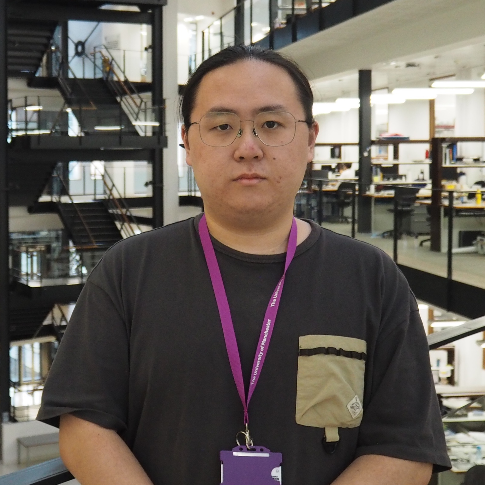

PHD STUDENT
Zhuo Chen
zhuo.chen-25@postgrad.manchester.ac.ukZhuo joined the Cai Lab as a PhD student in October 2025. In collaboration with Dr Claudia Igler and Prof Michael Brockhurst, his research focuses on bacteriophage genome recoding as a biocontainment strategy and AI approaches for synthetic phage engineering.
Zhuo graduated from the University of British Columbia, Vancouver in May 2024 with a BSc combining microbiology and oceanography. Prior to joining the Cai Lab, he completed an MRes in Biomedical Research (Bacterial Pathogenesis and Infection) at Imperial College London, working on phage–host interactions and anti-phage defence systems.
Outside the lab, Zhuo enjoys video games, music and playing guitar.